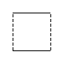
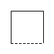
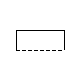

FCSys

Table of Contents
- User's Guide
- Blocks
- Conditions
- Assemblies
- Regions
- Subregions
- Phases
- Species
- Chemistry
- Connectors
- Characteristics
- Units
- Quantities
- Utilities
- Icons
Download
- Latest: v0.2.5 (2014-01-23)
FCSys.Icons.Conditions
Icons for conditionsInformation
Extends from Modelica.Icons.Package (Icon for standard packages).Package Content
| Name | Description |
|---|---|
| Pair | Icon for a two-connector boundary condition |
| Short icon for a two-connector boundary condition | |
| Single | Icon for a single-connector boundary condition |
| Short icon for a single-connector boundary condition |
 FCSys.Icons.Conditions.Pair
Icon for a two-connector boundary conditionModelica definition
partial class Pair "Icon for a two-connector boundary condition" // extends Names.Middle; end Pair;
 FCSys.Icons.Conditions.PairShort
FCSys.Icons.Conditions.PairShort
Short icon for a two-connector boundary condition
Modelica definition
partial class PairShort "Short icon for a two-connector boundary condition" // extends Names.Middle; end PairShort;
 FCSys.Icons.Conditions.Single
Icon for a single-connector boundary conditionModelica definition
partial class Single "Icon for a single-connector boundary condition" // extends Names.Middle; end Single;
 FCSys.Icons.Conditions.SingleShort
Short icon for a single-connector boundary conditionModelica definition
partial class SingleShort "Short icon for a single-connector boundary condition" // extends Names.Middle; end SingleShort;